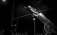
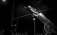
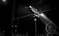

In 1986 in the region of the The Carpathians in Poland, a small troop of juggler which distracted the public in their spare time, other travelers come moreover joined them to go up finally a small company of circus with some trainers, contorsionistes and tightrope walker of all kind. Today the troop turns everywhere in the world and continues...
